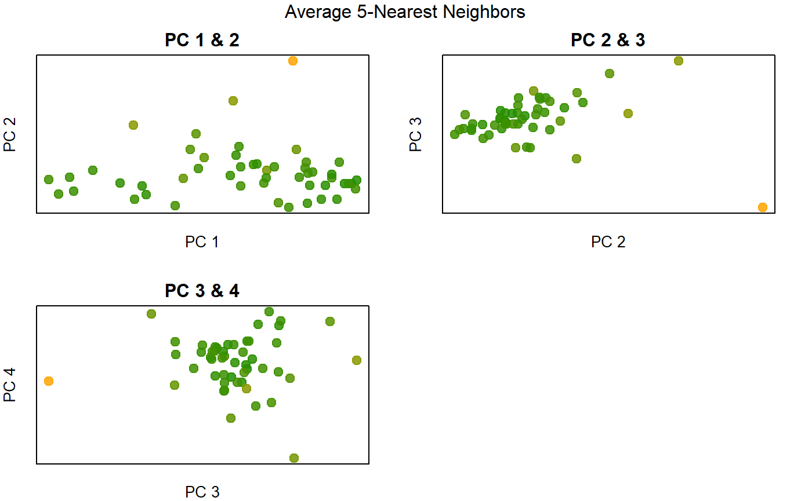

Overview
outsiders is an unsupervised outlier detection package for use with standard multidimensional data. The state.x77 data matrix containing 9 demographic characteristics of US states was used often for algorithm development and evaluation. Making use of the same data set, this vignette will provide code and visual analysis demonstrating methods available in the package.
Document Preparation
# document dependencies
library(outsiders) # devtools::install_github("dannymorris/outsiders") to install
library(dplyr) # data manipualation (CRAN)
library(tidyr) # structural formatting and data standardization (CRAN)
library(ggplot2) # static data visualization (CRAN)
library(knitr) # document printing (eg tables) (CRAN)
library(kableExtra) # "kable" (table) formatting (CRAN)
library(QuickR) # another personal package with utility functionsDemographic Data on US States
state.x77 %>%
kable()| Population | Income | Illiteracy | Life Exp | Murder | HS Grad | Frost | Area | |
|---|---|---|---|---|---|---|---|---|
| Alabama | 3615 | 3624 | 2.1 | 69.05 | 15.1 | 41.3 | 20 | 50708 |
| Alaska | 365 | 6315 | 1.5 | 69.31 | 11.3 | 66.7 | 152 | 566432 |
| Arizona | 2212 | 4530 | 1.8 | 70.55 | 7.8 | 58.1 | 15 | 113417 |
| Arkansas | 2110 | 3378 | 1.9 | 70.66 | 10.1 | 39.9 | 65 | 51945 |
| California | 21198 | 5114 | 1.1 | 71.71 | 10.3 | 62.6 | 20 | 156361 |
| Colorado | 2541 | 4884 | 0.7 | 72.06 | 6.8 | 63.9 | 166 | 103766 |
| Connecticut | 3100 | 5348 | 1.1 | 72.48 | 3.1 | 56.0 | 139 | 4862 |
| Delaware | 579 | 4809 | 0.9 | 70.06 | 6.2 | 54.6 | 103 | 1982 |
| Florida | 8277 | 4815 | 1.3 | 70.66 | 10.7 | 52.6 | 11 | 54090 |
| Georgia | 4931 | 4091 | 2.0 | 68.54 | 13.9 | 40.6 | 60 | 58073 |
| Hawaii | 868 | 4963 | 1.9 | 73.60 | 6.2 | 61.9 | 0 | 6425 |
| Idaho | 813 | 4119 | 0.6 | 71.87 | 5.3 | 59.5 | 126 | 82677 |
| Illinois | 11197 | 5107 | 0.9 | 70.14 | 10.3 | 52.6 | 127 | 55748 |
| Indiana | 5313 | 4458 | 0.7 | 70.88 | 7.1 | 52.9 | 122 | 36097 |
| Iowa | 2861 | 4628 | 0.5 | 72.56 | 2.3 | 59.0 | 140 | 55941 |
| Kansas | 2280 | 4669 | 0.6 | 72.58 | 4.5 | 59.9 | 114 | 81787 |
| Kentucky | 3387 | 3712 | 1.6 | 70.10 | 10.6 | 38.5 | 95 | 39650 |
| Louisiana | 3806 | 3545 | 2.8 | 68.76 | 13.2 | 42.2 | 12 | 44930 |
| Maine | 1058 | 3694 | 0.7 | 70.39 | 2.7 | 54.7 | 161 | 30920 |
| Maryland | 4122 | 5299 | 0.9 | 70.22 | 8.5 | 52.3 | 101 | 9891 |
| Massachusetts | 5814 | 4755 | 1.1 | 71.83 | 3.3 | 58.5 | 103 | 7826 |
| Michigan | 9111 | 4751 | 0.9 | 70.63 | 11.1 | 52.8 | 125 | 56817 |
| Minnesota | 3921 | 4675 | 0.6 | 72.96 | 2.3 | 57.6 | 160 | 79289 |
| Mississippi | 2341 | 3098 | 2.4 | 68.09 | 12.5 | 41.0 | 50 | 47296 |
| Missouri | 4767 | 4254 | 0.8 | 70.69 | 9.3 | 48.8 | 108 | 68995 |
| Montana | 746 | 4347 | 0.6 | 70.56 | 5.0 | 59.2 | 155 | 145587 |
| Nebraska | 1544 | 4508 | 0.6 | 72.60 | 2.9 | 59.3 | 139 | 76483 |
| Nevada | 590 | 5149 | 0.5 | 69.03 | 11.5 | 65.2 | 188 | 109889 |
| New Hampshire | 812 | 4281 | 0.7 | 71.23 | 3.3 | 57.6 | 174 | 9027 |
| New Jersey | 7333 | 5237 | 1.1 | 70.93 | 5.2 | 52.5 | 115 | 7521 |
| New Mexico | 1144 | 3601 | 2.2 | 70.32 | 9.7 | 55.2 | 120 | 121412 |
| New York | 18076 | 4903 | 1.4 | 70.55 | 10.9 | 52.7 | 82 | 47831 |
| North Carolina | 5441 | 3875 | 1.8 | 69.21 | 11.1 | 38.5 | 80 | 48798 |
| North Dakota | 637 | 5087 | 0.8 | 72.78 | 1.4 | 50.3 | 186 | 69273 |
| Ohio | 10735 | 4561 | 0.8 | 70.82 | 7.4 | 53.2 | 124 | 40975 |
| Oklahoma | 2715 | 3983 | 1.1 | 71.42 | 6.4 | 51.6 | 82 | 68782 |
| Oregon | 2284 | 4660 | 0.6 | 72.13 | 4.2 | 60.0 | 44 | 96184 |
| Pennsylvania | 11860 | 4449 | 1.0 | 70.43 | 6.1 | 50.2 | 126 | 44966 |
| Rhode Island | 931 | 4558 | 1.3 | 71.90 | 2.4 | 46.4 | 127 | 1049 |
| South Carolina | 2816 | 3635 | 2.3 | 67.96 | 11.6 | 37.8 | 65 | 30225 |
| South Dakota | 681 | 4167 | 0.5 | 72.08 | 1.7 | 53.3 | 172 | 75955 |
| Tennessee | 4173 | 3821 | 1.7 | 70.11 | 11.0 | 41.8 | 70 | 41328 |
| Texas | 12237 | 4188 | 2.2 | 70.90 | 12.2 | 47.4 | 35 | 262134 |
| Utah | 1203 | 4022 | 0.6 | 72.90 | 4.5 | 67.3 | 137 | 82096 |
| Vermont | 472 | 3907 | 0.6 | 71.64 | 5.5 | 57.1 | 168 | 9267 |
| Virginia | 4981 | 4701 | 1.4 | 70.08 | 9.5 | 47.8 | 85 | 39780 |
| Washington | 3559 | 4864 | 0.6 | 71.72 | 4.3 | 63.5 | 32 | 66570 |
| West Virginia | 1799 | 3617 | 1.4 | 69.48 | 6.7 | 41.6 | 100 | 24070 |
| Wisconsin | 4589 | 4468 | 0.7 | 72.48 | 3.0 | 54.5 | 149 | 54464 |
| Wyoming | 376 | 4566 | 0.6 | 70.29 | 6.9 | 62.9 | 173 | 97203 |
Variable Scaling
The standard variable scaling convention is to subtract the variable mean from each observation and divide by standard deviation. Doing so eliminates the undesirable influence of variables measured on larger and wider scales, such as Population (in thousands) compared to HS Grad (percent between 0 and 100).
\[X scaled = (X - mean(X)) / sd(X)) \]
data_scaled <- scale(state.x77)Exploratory Univariate Analysis
par(mfrow = c(3, 3),
mar = c(2,2,2,2))
for (i in 1:ncol(state.x77)) {
plot(density(state.x77[, i]), xlab = "", main = colnames(state.x77)[i])
points(x = state.x77[, i], y = rep(0, 50),
col = QuickR::add_alpha("red", 0.5), pch = 21)
}The density plot matrix shows an interesting combination of skewed, normal, and multi-modal distributions. Outliers are evident in univariate visual analysis and are likely evident in the multivariate sense.
Multivariate Visualization of Principal Components
principal_components <- princomp(data_scaled)
summary(principal_components, loadings = T)## Importance of components:
## Comp.1 Comp.2 Comp.3 Comp.4 Comp.5
## Standard deviation 1.8780090 1.2646268 1.0438881 0.83267888 0.61396161
## Proportion of Variance 0.4498619 0.2039899 0.1389926 0.08843803 0.04808021
## Cumulative Proportion 0.4498619 0.6538519 0.7928445 0.88128252 0.92936273
## Comp.6 Comp.7 Comp.8
## Standard deviation 0.54891933 0.3762443 0.33305246
## Proportion of Variance 0.03843271 0.0180561 0.01414846
## Cumulative Proportion 0.96779544 0.9858515 1.00000000
##
## Loadings:
## Comp.1 Comp.2 Comp.3 Comp.4 Comp.5 Comp.6 Comp.7 Comp.8
## Population -0.126 0.411 0.656 0.409 -0.406 0.219
## Income 0.299 0.519 0.100 0.638 0.462
## Illiteracy -0.468 -0.353 0.387 -0.620 0.339
## Life Exp 0.412 0.360 -0.443 -0.327 0.219 -0.256 -0.527
## Murder -0.444 0.307 -0.108 0.166 0.128 -0.325 -0.295 -0.678
## HS Grad 0.425 0.299 -0.232 -0.645 -0.393 0.307
## Frost 0.357 -0.154 -0.387 0.619 -0.217 0.213 -0.472
## Area 0.588 -0.510 -0.201 -0.499 0.148 0.286pca_scores <- principal_components$scores[, 1:4]
pairs(pca_scores, main = "Principal Components 1-4 Explaining \n88% of Total Variation")
Visual analysis of the first four principal components reveals the presence of multivariate outliers along with insights into the spatial arrangement of the data points.
Assessment of Multivariate Normality
chisq_distances <- outsiders::chisq_mvn(data_scaled)
plot(chisq ~ distances, data = chisq_distances,
main = "Multivariate Ordered Chi-Squared Distances")
abline(lm(chisq ~ distances, data = chisq_distances), lty = 2)
The data appears largely non-normal in the multivariate sense.
Outlier Detection
Attribute-Wise Learning
The also function implements Attribute-Wise Learning for Scoring Outliers (ALSO), which combines supervised and unsupervised learning to score outliers using dependent variable modeling of all features. For each variable in the original data set, a supervised model (classification or regression) is fit using the remaining variables as predictors. Outlier scores reflect the distance of the predicted value for a given observation to its actual value. Outlier scores are then summed to provide a single score suitable for extreme-value analysis.
Random Forest
also_rand_forest <- outsiders::also(data = data_scaled,
method = randomForest::randomForest,
cross_validate = FALSE,
scores_only = TRUE)## Warning: package 'bindrcpp' was built under R version 3.4.4We will use this custom function to automate and standardize visualizations of outlier scores again the first four principal components.
plot_score <- function(score, formula = Comp.2 ~ Comp.1, data = pca_scores,
low = "grey90", high = "blue", ...) {
colors <- colorRamp(c(low, high))
mapping <- rgb(colors(score / max(score)), maxColorValue = 255)
pairs(pca_scores, pch = 19,
col = QuickR::add_alpha(mapping, 0.85), ...)
}
plot_score(also_rand_forest, main = "ALSO with Random Forests")Ordinary Least Squares
also_lm <- outsiders::also(data = data_scaled,
method = lm,
cross_validate = TRUE,
n_folds = 10,
scores_only = TRUE)
plot_score(also_lm, main = "ALSO with OLS")Proximity-based Scoring
This section will show two variations of k-nearest neighbors.
average_5nn <- outsiders::aggregate_knn(data_scaled, fun = mean, k = 5)## Warning in outsiders::aggregate_knn(data_scaled, fun = mean, k = 5): Data
## not a distance matrix. Euclidean distance matrix computed by default.harmonic_5nn <- outsiders::aggregate_knn(data_scaled, fun = QuickR::harmonic_mean,
nrow(data_scaled))## Warning in outsiders::aggregate_knn(data_scaled, fun =
## QuickR::harmonic_mean, : Data not a distance matrix. Euclidean distance
## matrix computed by default.plot_score(average_5nn, main = "Mean Euclidean Distance\n 5-Nearest Neighbors")plot_score(harmonic_5nn, main = "Harmonic Mean Euclidean Distance\n N-Nearest Neighbors")Compared to the average Euclidean 5-nearest neightbors outlier score the harmonic mean variation seemingly detects more noise.
PCA Rotation Forest
pca_forest <- outsiders::pca_bag(data = data_scaled,
outlier_fun = function(x) mahalanobis(x, colMeans(x), cov(x)))## Warning in outsiders::pca_bag(data = data_scaled, outlier_fun = function(x)
## mahalanobis(x, : n_iterations not specified. Defaults to 50plot_score(pca_forest, main = "50-Bag PCA Rotation Forest Combining\n Mahalanobis Distance Scores")